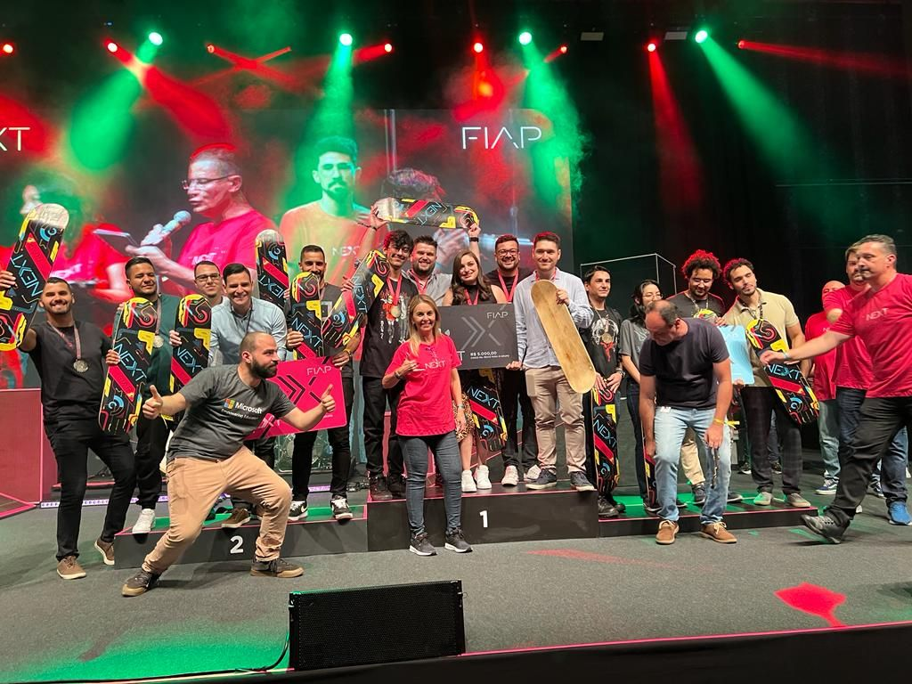

20 de Maio de 2023
FIAP NEXT - Festival de Tecnologia e Inovação

O FIAP NEXT é o Festival de Tecnologia e Inovação promovido todo ano pela Faculdade FIAP que reúne mais de dois mil alunos de diversos cursos apresentando suas criações. O FIAP NEXT premia os melhores projetos dos alunos de todos os cursos da graduação. Na edição do FIAP NEXT 2022 que ocorreu sábado (22/10/2023), meu grupo ficou em 1º LUGAR no Enterprise Challenge com a Microsoft! Trouxemos a medalha de Ouro para casa e o sentimento de dever cumprido com várias barreiras e desafios vencidos!